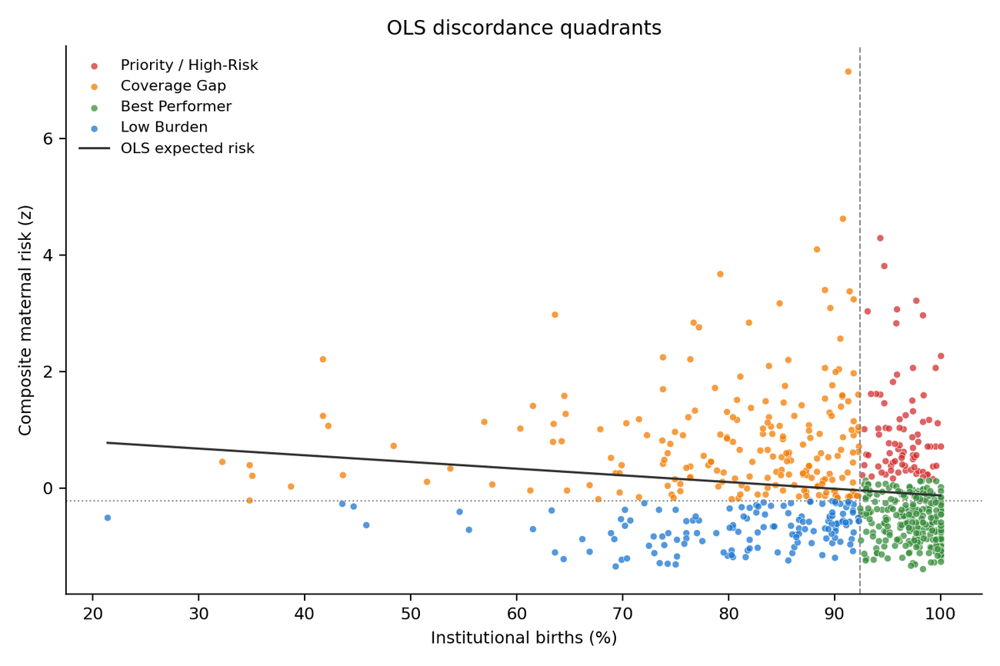
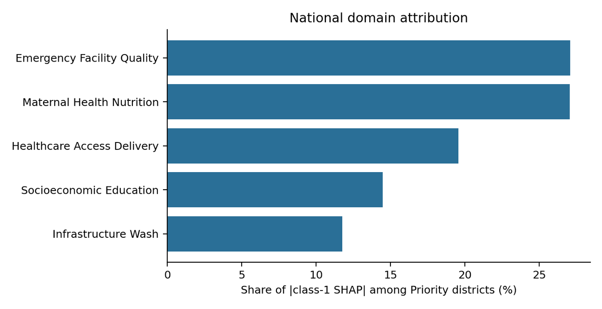
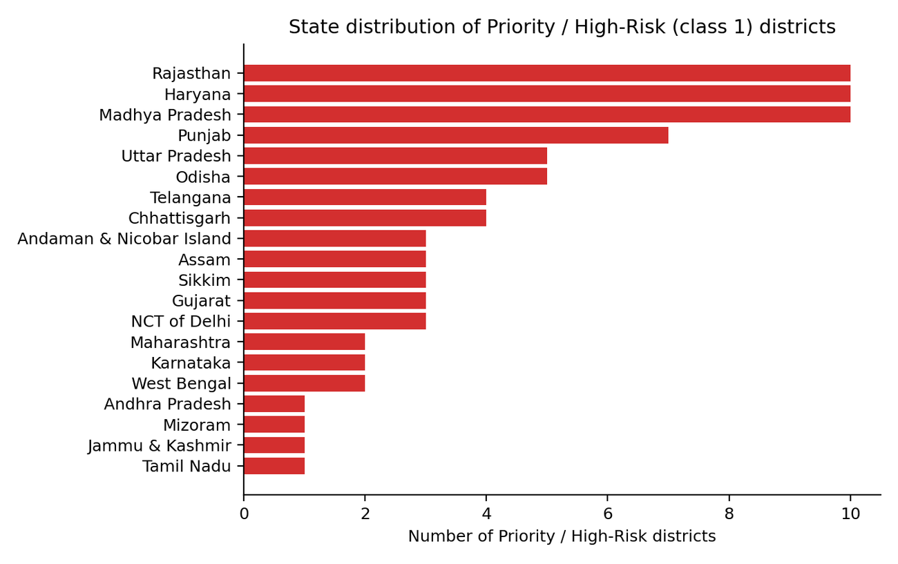
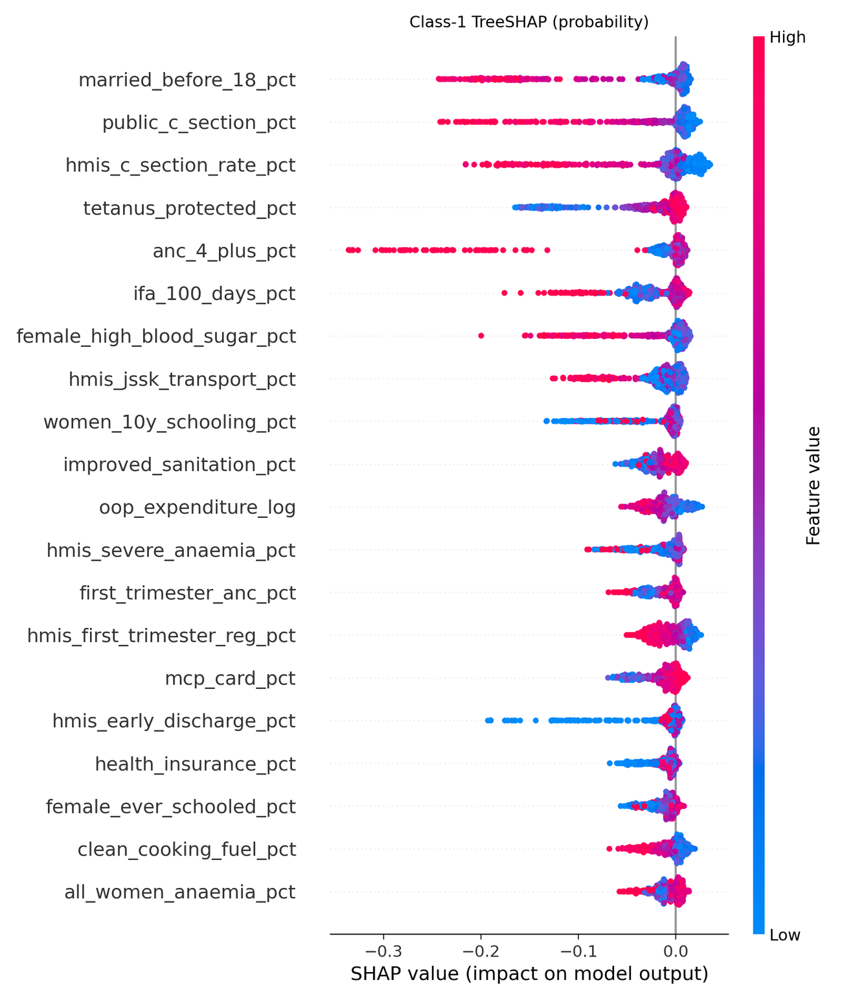
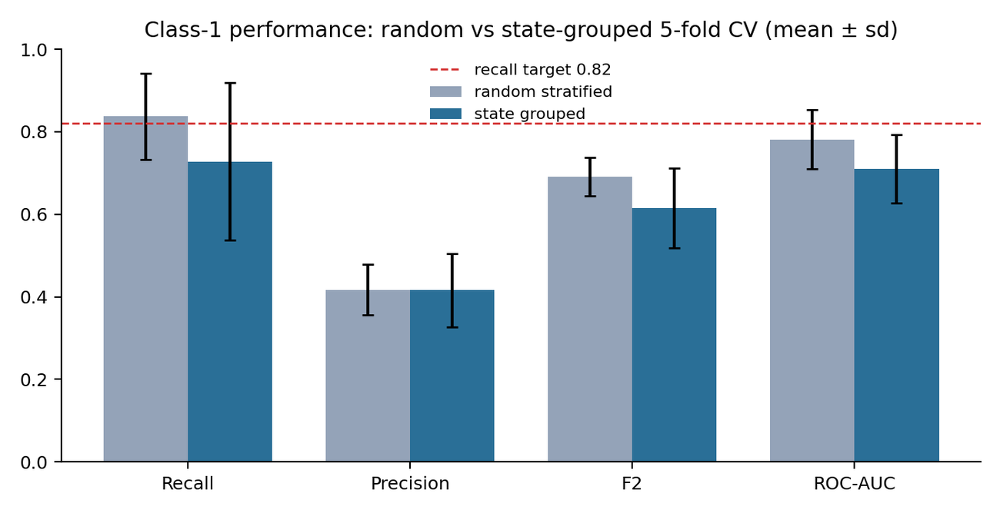
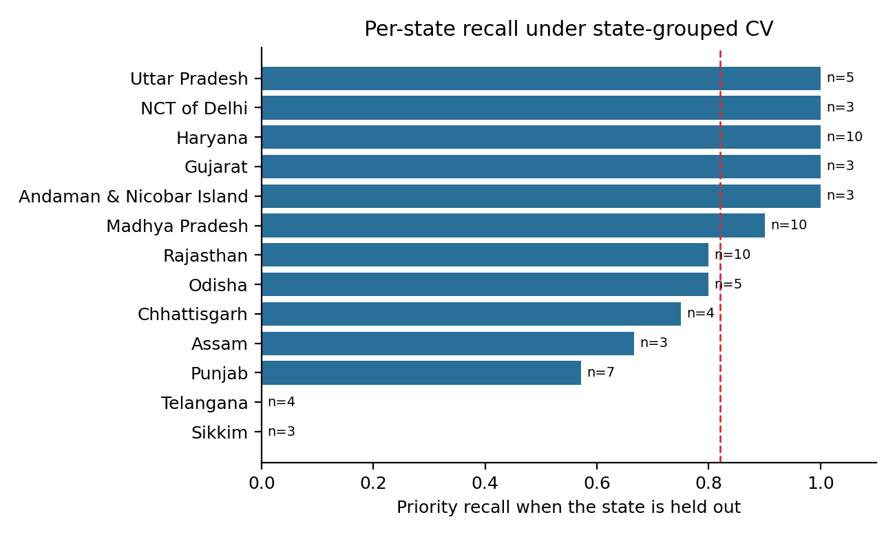

Methodology and results report
Maternal Risk Discordance in Indian Districts
1Summary
Many Indian districts now deliver almost all births in institutions, yet some of them still record more maternal deaths than their coverage would predict. This project finds those discordant districts, explains what distinguishes them from high-coverage districts that do well, and maps the explanation onto national scheme levers (LaQshya, PMSMA, JSY, POSHAN Abhiyaan).
Key findings
- Coverage explains little of the variation in maternal mortality. Across districts, institutional births correlate with facility-reported maternal mortality at only r = −0.14. Most of the variation lies elsewhere.
- 80 districts are discordant: institutional births at or above the national median (92.4%) but mortality well above what that coverage predicts. They cluster in Haryana, Madhya Pradesh and Rajasthan (10 each) and Punjab (7).
- Low caesarean-section rates are the strongest marker. Discordant districts have a median public-facility C-section rate of 13.4%, against 25.2% in high-coverage districts that perform well. Emergency/facility quality and maternal nutrition each account for about 27% of the model's attribution.
- The screening model transfers moderately across states. It finds 84% of Priority districts in cross-validation, and 73% when whole states are held out (ROC-AUC 0.71). Roughly 6 in 10 flagged districts are false alarms, so the list suits audit targeting, not funding decisions.
- Our mortality figures reproduce published estimates. Within states, our district ranking matches Goli et al. (2022) at a median Spearman correlation of 0.97.
2Question and design
The question is: among districts with high institutional-delivery coverage, which have unexpectedly high maternal mortality, and what distinguishes them? A model that predicts mortality directly would lean on coverage itself and say little that programme managers can act on. The design therefore separates labelling from explanation.
- Stage 1, labels. Regress district maternal risk on institutional births and keep the residual: how much worse (or better) a district does than its coverage predicts. Combine coverage and residual into four operational classes.
- Stage 2, classifier. Train tree ensembles to recognise the discordant class from 31 health-system, nutrition, socioeconomic and infrastructure indicators. Institutional births and every outcome-derived column are blocked from the feature set by a programmatic leakage check.
- Stage 3, explanations. Use exact TreeSHAP to attribute each district's classification to indicators, roll them up into five policy domains, and map each district's top drivers to schemes.
Stage 2 compares only Priority with Best Performer districts. Both groups have above-median coverage by construction, so coverage-related indicators cannot separate them, and the drivers describe why similarly covered districts diverge.
3Data
| Source | Coverage | Used for |
|---|---|---|
| NFHS-5 district fact sheets (MoHFW / IIPS, 2019–21) | 707 districts, 104 indicators | Coverage anchor (institutional births) and 30 candidate explanatory indicators |
| HMIS C2 item-wise monthly, all states and districts (MoHFW), 2017–18, 2018–19, 2019–20 | 704 districts, 19 items | Maternal deaths and live births (target); C-sections, severe anaemia, blood units, free transport, early discharge, ANC registration, IFA |
| District boundaries (NFHS-aligned GeoJSON) | 641 polygons | Dashboard map only |
Harmonisation
- HMIS extraction. The official archives are about 2.5 GB of HTML per year. A streaming parser reads each district's annual all-sector total, and its output was checked against
pandas.read_htmlwith zero mismatches. Counts are summed across the three years, never averaged as rates. 673 districts contribute all three years and 31 newer districts contribute two. The median modelled district has 58 maternal deaths in the pooled window. - District matching. Names are matched within each state: curated aliases first, then exact normalised names, then fuzzy token matching (score ≥ 90 accepted automatically). HMIS districts carved out after the NFHS-5 frame (for example Alipurduar and Jhargram in West Bengal, Aizawl East and West in Mizoram) are summed into their NFHS parent. 698 of 706 districts (98.9%) matched. The 8 unmatched are six 2016 Assam districts and Mumbai/Mumbai Suburban, which HMIS reports only inside larger units and which cannot be split without population weights.
- Exclusions. Districts with fewer than 500 pooled live births are dropped as too noisy, leaving 693 modelled districts.
- Source quality. The NFHS mirror stores suppressed factsheet values ("*") as 0; for indicators where zero is implausible these become missing. "Third or higher order births" was excluded because its values do not match the indicator's scale.
Features
34 candidate indicators were grouped into five domains. Three were removed by label-free rules, applied before any modelling:
| Removed indicator | Rule | Value |
|---|---|---|
| Private-facility C-section rate | Missing in more than 20% of districts | 20.6% |
| Births attended by skilled personnel | Near-duplicate of the coverage anchor (|r| > 0.9) | r = 0.947 |
| Female literacy | Variance inflation factor above 7.5 | VIF 14.6 |
The remaining 31 features cover emergency and facility quality (6), maternal health and nutrition (10), healthcare access (7), socioeconomics (4) and infrastructure/WASH (4). Missing values are imputed with a K-nearest-neighbour imputer fitted within each state on training districts only, falling back to the geographic zone and then the national cohort for small states.
Indicators named in the original blueprint but not published at district level in these sources (JSY assistance, SC/ST and rural share, male literacy, FRU and blood-storage-unit counts) are absent. HMIS proxies are used where they exist: blood units issued per 1,000 deliveries, JSSK free transport and severe anaemia (Hb < 7).
4Stage 1: priority labels
Maternal risk
District maternal mortality ratios are shrunk toward the state rate with an empirical-Bayes prior worth 3,000 live births, so small districts do not produce extreme ratios from a handful of deaths. The risk score is the standardised (z) smoothed ratio.
The smoothed facility MMR has a median of 85.5 per 100,000 live births (interquartile range 53.7–129.2). These are facility-reported figures and are not comparable in level with SRS estimates.
Why mortality only. The blueprint combined mortality (70%) with a severe-morbidity rate (30%). HMIS reports morbidity only as "obstetric complications attended", and states define that item very differently: Tamil Nadu records it for a median 56% of deliveries against 5.4% nationally. With morbidity included, 26 of 32 Tamil Nadu districts were labelled Priority despite one of the lowest mortality ratios in the country. The morbidity weight is therefore set to zero (configurable).
Regression and classes
Internally studentised residuals rᵢ measure discordance. With the coverage threshold at the national median (92.4%) and the residual threshold at 0.25:
| Class | Rule | Districts |
|---|---|---|
| Priority / High-Risk | Coverage ≥ 92.4% and rᵢ > 0.25 | 80 |
| Best Performer | Coverage ≥ 92.4% and rᵢ ≤ 0.25 | 267 |
| Coverage Gap | Coverage < 92.4% and risk above median | 206 |
| Low Burden | Coverage < 92.4% and risk at or below median | 140 |
Six Low Burden districts have institutional births below 60%. They are flagged for civil-registration and verbal-autopsy audits, because low reported risk there may reflect unrecorded home deaths.

5Stage 2: classifier
The 347 high-coverage districts (80 Priority, 267 Best Performer) were split 80/20 into training (277) and a stratified holdout (70, of which 16 Priority). Four tree ensembles were tuned with 50 Optuna trials each over 5-fold stratified cross-validation, with balanced class weights and an extra 1.25× weight on Priority districts. Models were ranked by 0.6 × F1(Priority) + 0.4 × macro F1 in cross-validation; the holdout was never used for selection.
| Model | CV objective | Holdout recall | Holdout precision | ROC-AUC | PR-AUC |
|---|---|---|---|---|---|
| Random Forest (selected) | 0.591 | 0.69 | 0.55 | 0.804 | 0.566 |
| XGBoost | 0.558 | 0.75 | 0.41 | 0.782 | 0.626 |
| Gradient Boosting | 0.551 | 0.56 | 0.43 | 0.788 | 0.530 |
| LightGBM | 0.549 | 0.81 | 0.52 | 0.803 | 0.612 |
Holdout recall and precision at each model's default decision rule. Selected hyper-parameters: 200 trees, max depth 13, min 5 samples per leaf, log₂ features per split.
Decision threshold
For screening, missing a discordant district costs more than an unnecessary audit. The Priority cut-off was set to the highest probability whose out-of-fold recall reaches 0.82, using training folds only: 0.348. On the holdout this catches 14 of 16 Priority districts (recall 0.875, precision 0.42, F2 0.72), with 19 false alarms among 54 Best Performers. Each holdout district moves recall by about 6 points, so the cross-validated figures in section 7 are the more reliable estimate.
Calibration
Displayed risk scores come from an isotonic-calibrated copy of the model (holdout Brier score 0.152 → 0.133). Isotonic calibration is a step function and tops out at 70%, so the top-ranked districts tie on the calibrated score; the ranking breaks ties with the uncalibrated probability.
6Stage 3: explanations
TreeSHAP values are exact for tree ensembles and additive: a district's attributions sum to its model output (checked to within 10⁻³ on every run). Summing a domain's member indicators gives its contribution, and the national share is each domain's share of absolute attribution across the 80 Priority districts.
| Domain | Share | Scheme lever |
|---|---|---|
| Emergency and facility quality | 27.1% | LaQshya; NHM FRU and blood-bank upgradation |
| Maternal health and nutrition | 27.1% | POSHAN Abhiyaan; Anaemia Mukt Bharat |
| Healthcare access and delivery | 19.6% | PMSMA; Janani Suraksha Yojana |
| Socioeconomic and education | 14.5% | Beti Bachao Beti Padhao; PM-JAY |
| Infrastructure and WASH | 11.8% | Jal Jeevan Mission; Swachh Bharat; IPHS norms |
Leading indicators and their direction
The table shows the ten indicators with the largest mean attribution among Priority districts, and whether a higher value pushes a district toward or away from Priority (Spearman correlation between value and attribution).
| Indicator | Higher value | ρ | Reading |
|---|---|---|---|
| Public-facility C-section rate (NFHS) | lowers risk | −0.84 | Plausible: surgical access for obstructed labour and haemorrhage |
| C-section rate (HMIS) | lowers risk | −0.87 | Plausible; Priority median 20.7% vs 30.7% |
| IFA for 100+ days | raises risk | +0.44 | Counter-intuitive; likely a regional proxy |
| High blood sugar in women | lowers risk | −0.48 | Counter-intuitive; tracks wealthier, southern districts |
| Married before 18 | lowers risk | −0.56 | Counter-intuitive; regional composition |
| Clean cooking fuel | lowers risk | −0.87 | Plausible as a wealth marker |
| Tetanus protection | raises risk | +0.79 | Counter-intuitive; likely regional or reporting proxy |
| First-trimester ANC registration (HMIS) | lowers risk | −0.95 | Plausible: earlier high-risk identification |
| Out-of-pocket delivery cost (log) | lowers risk | −0.90 | Counter-intuitive; higher cost marks richer, private-heavy districts |
| Severe anaemia, Hb < 7 (HMIS) | raises risk | +0.52 | Plausible: PPH tolerance and direct cause of death |
Read the drivers as associations. Four indicators have clear clinical mechanisms (C-section access, early ANC registration, severe anaemia) or a wealth interpretation (clean fuel). Several others point the "wrong" way. These most likely stand in for regional differences, or for districts that report deaths more completely and so appear riskier. SHAP explains the model, not the causes of death.
Among the 80 Priority districts, the domain contributing most toward Priority is emergency/facility quality in 31, nutrition in 16, access in 15, WASH in 3 and socioeconomics in 1. In the remaining 14, no domain pushes toward Priority: the model does not recognise them, and their labels rest on mortality alone.



7Validation
Do results transfer to unseen states?
Random cross-validation lets districts from the same state appear in both training and test folds, which flatters performance when outcomes cluster by state. State-grouped cross-validation holds out whole states. Both use the selected model and settings, and each outer fold re-chooses its own threshold on an inner cross-validation of its training districts.
| 5-fold CV, 347 districts | Recall | Precision | F2 | ROC-AUC |
|---|---|---|---|---|
| Random (stratified) | 0.84 ± 0.11 | 0.42 ± 0.06 | 0.69 ± 0.05 | 0.78 ± 0.07 |
| Whole states held out | 0.73 ± 0.19 | 0.42 ± 0.09 | 0.62 ± 0.10 | 0.71 ± 0.08 |
Performance falls by 0.07 AUC when states are held out but remains well above chance. Recall is uneven: every Priority district in Haryana (10/10) and Uttar Pradesh (5/5) is found, and 9 of 10 in Madhya Pradesh, but none in Sikkim (0/3) or Telangana (0/4) and 4 of 7 in Punjab. Rankings in states with few training districts deserve the most caution.


How stable are the labels?
Stage 1 was re-run under six alternative settings. Jaccard similarity compares each variant's Priority set with the baseline.
| Variant | Priority districts | Jaccard | Baseline Priority kept |
|---|---|---|---|
| Baseline (mortality only, prior 3,000, threshold 0.25, median coverage) | 80 | 1.00 | 100% |
| Empirical-Bayes prior 1,000 live births | 79 | 0.92 | 95% |
| Empirical-Bayes prior 10,000 live births | 83 | 0.96 | 100% |
| Residual threshold 0 | 117 | 0.68 | 100% |
| Residual threshold 0.5 | 59 | 0.74 | 74% |
| Coverage threshold 80% (policy benchmark) | 163 | 0.49 | 100% |
The list is robust to smoothing strength. Thresholds change its size, as expected, but the core persists: every baseline Priority district remains Priority under the looser residual and coverage thresholds.
Consistency with published estimates
Goli et al. (2022) published MMR for 640 districts from the same three HMIS years, scaled by a state calibration factor. Matching 603 of our modelled districts to their table:
- Within states, rankings agree almost exactly: median Spearman 0.97 (interquartile range 0.91–0.99, 26 states). Nationally the correlation is 0.82, lower only because of their state-level rescaling.
- Our Priority districts sit at a median 85th percentile of their state's published MMR; only 1 of 73 falls in the bottom quartile. Best Performers sit at the 40th and Low Burden districts at the 27th.
This confirms that our extraction and labels agree with published figures from the same source. It is not an independent clinical validation.
8How the design changed
Validation exposed problems in earlier versions. Each change below was kept only because it improved generalisation to held-out states.
| Version | Change | AUC, states held out | AUC, random CV | Problem found |
|---|---|---|---|---|
| 1 | Blueprint: four classes, 0.7 mortality + 0.3 morbidity, HMIS 2019–20 only | — | 0.83* | High postnatal-care coverage appeared as a top risk driver: coverage indicators were standing in for the excluded anchor |
| 2 | Binary Priority vs Best Performer; recall-targeted threshold | 0.54 | 0.74 | Near-chance on held-out states; 26 Tamil Nadu districts labelled Priority because of its morbidity reporting |
| 3 | Mortality-only risk score | 0.61 | 0.74 | Better, but single-year death counts were noisy (median 17 per district) |
| 4 | Pool HMIS 2017–18 to 2019–20 | 0.71 | 0.78 | Current version |
* Four-class macro one-vs-rest AUC on the holdout; not comparable with the binary task.
9Limitations
- Facility-reported deaths. HMIS records deaths that reach the reporting system. Districts that report more completely can look riskier, and some counter-intuitive drivers probably reflect this.
- Associations, not causes. SHAP explains the classifier. Drivers need confirmation through maternal death surveillance and response (MDSR) and LaQshya facility audits.
- Moderate precision. About 6 in 10 flagged districts are false alarms at the screening threshold.
- In-sample scores. Risk scores for districts used in training are in-sample, so their ranking is optimistic. Cross-fitted scores would remove this.
- Mismatched windows. HMIS covers April 2017 to March 2020; NFHS-5 fieldwork ran 2019–21. Determinants are measured slightly after outcomes.
- Missing indicators. JSY assistance, caste and rural composition, FRU and blood-storage-unit counts are not available at district level in these sources.
- Coverage of the frame. 13 districts are excluded (8 unmatched, 5 with fewer than 500 live births), and 70 districts created after the 2011 boundaries have no polygon on the map.
- Small evaluation sets. The holdout has 16 Priority districts and some states have only 3 or 4, so per-state figures are uncertain.
10Using the results
- Use the Priority list to target audits: MDSR review of recent deaths, LaQshya assessment of labour rooms, C-section and blood availability at first referral units.
- Prioritise districts where a plausible driver leads the explanation, such as a low C-section rate, late ANC registration or high severe anaemia.
- Treat the six low-coverage, low-reported-risk districts as a verification queue for CRS and verbal-autopsy audits.
- Use the what-if simulator to explore model sensitivity, not to estimate the impact of a programme.
- Do not use the scores to allocate funds or rank districts in states with few training examples.
Next steps
- Cross-fitted (out-of-fold) risk scores for all districts.
- State fixed effects in Stage 1, to separate within-state discordance from between-state reporting differences.
- HMIS 2020–21 onward, once accessible in a compatible format, and a completeness adjustment using CRS death registration.
- Field validation of the top-ranked districts against state MDSR reports.
11Reproducibility
All results come from one command, python -m src.run_pipeline (about 20 minutes), with configuration in config/config.yaml. Random seed 42 throughout.
| Output | Content |
|---|---|
data/processed/priority_action_table.csv | Ranked districts, risk score, residual, top 5 drivers, scheme mapping, audit flag |
models/benchmark_metrics.json | CV, out-of-fold and holdout metrics for all models; threshold; calibration |
models/validation_report.json | Random vs state-grouped CV, per-state recall, label sensitivity |
data/processed/match_audit.csv, feature_selection_audit.csv | Every matching and feature decision |
reports/external_mmr_comparison.csv | District-level comparison with Goli et al. (2022) |
notebooks/01–04 | Executed walkthroughs of each stage |
The interactive dashboard (streamlit run app/streamlit_app.py) has the national map, district scorecards with SHAP waterfalls, the what-if simulator and CSV, Excel and PDF exports. 24 automated tests cover leakage, SHAP additivity, matching, imputation, thresholding and an end-to-end synthetic run.
12Appendix: top 20 Priority districts
Ranked by calibrated risk score, ties broken by the uncalibrated probability. Residual rᵢ is the studentised Stage 1 residual.
| # | District | State | Risk | rᵢ | Inst. births | Leading driver | Primary domain |
|---|---|---|---|---|---|---|---|
| 1 | Raisen | Madhya Pradesh | 70.0 | 0.76 | 96.0 | C-section rate (HMIS) | Emergency/facility |
| 2 | Bhind | Madhya Pradesh | 70.0 | 0.26 | 93.5 | C-section rate (HMIS) | Access |
| 3 | Rajsamand | Rajasthan | 70.0 | 1.11 | 95.1 | C-section rate (HMIS) | Access |
| 4 | Uttar Bastar Kanker | Chhattisgarh | 70.0 | 1.09 | 94.1 | C-section rate (HMIS) | Emergency/facility |
| 5 | Dibrugarh | Assam | 70.0 | 3.11 | 93.1 | Public C-section rate | Emergency/facility |
| 6 | Rajnandgaon | Chhattisgarh | 70.0 | 0.52 | 95.5 | Public C-section rate | Emergency/facility |
| 7 | Udaipur | Rajasthan | 70.0 | 1.13 | 96.1 | Public C-section rate | Access |
| 8 | Neemuch | Madhya Pradesh | 70.0 | 0.64 | 97.5 | C-section rate (HMIS) | Emergency/facility |
| 9 | Balod | Chhattisgarh | 70.0 | 0.61 | 97.4 | Public C-section rate | Emergency/facility |
| 10 | Fatehabad | Haryana | 70.0 | 0.40 | 97.9 | Public C-section rate | Emergency/facility |
| 11 | Khargone (West Nimar) | Madhya Pradesh | 70.0 | 0.44 | 92.8 | Out-of-pocket cost | Access |
| 12 | Mau | Uttar Pradesh | 70.0 | 1.54 | 94.7 | C-section rate (HMIS) | Emergency/facility |
| 13 | Balaghat | Madhya Pradesh | 70.0 | 0.85 | 95.1 | Out-of-pocket cost | WASH |
| 14 | Kalahandi | Odisha | 70.0 | 1.07 | 92.8 | Public C-section rate | Nutrition |
| 15 | Jabalpur | Madhya Pradesh | 70.0 | 3.91 | 94.7 | Public C-section rate | Emergency/facility |
| 16 | Banswara | Rajasthan | 67.4 | 0.67 | 97.7 | C-section rate (HMIS) | Emergency/facility |
| 17 | Dhaulpur | Rajasthan | 67.4 | 0.34 | 94.4 | C-section rate (HMIS) | Emergency/facility |
| 18 | Sambalpur | Odisha | 67.4 | 2.21 | 99.5 | High blood sugar | Nutrition |
| 19 | Pratapgarh | Rajasthan | 67.4 | 0.66 | 96.4 | C-section rate (HMIS) | Emergency/facility |
| 20 | Dungarpur | Rajasthan | 67.1 | 0.44 | 94.1 | C-section rate (HMIS) | Access |
Risk = calibrated probability of the Priority class (%). The full ranked list for all 693 districts, with five drivers each, is in priority_action_table.csv and the dashboard.